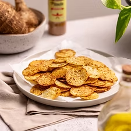
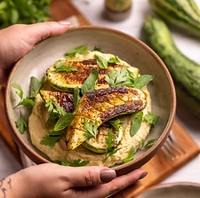
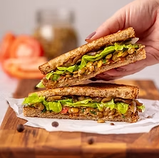
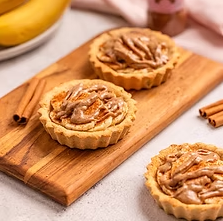
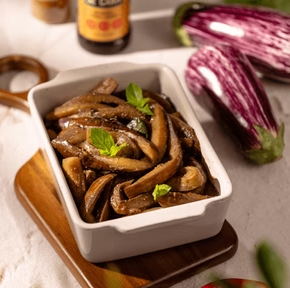
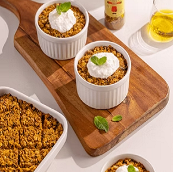
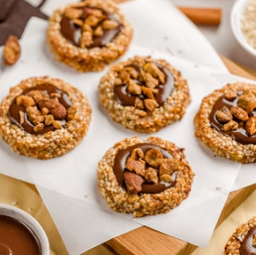
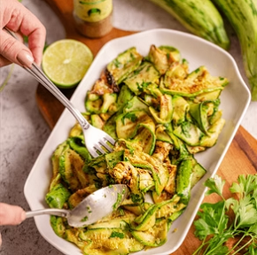
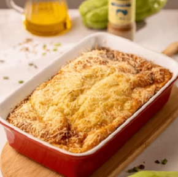
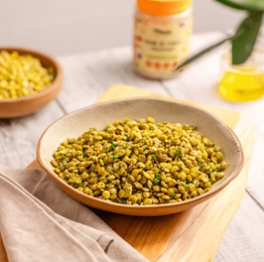

Login
Receitas saudáveis e deliciosas
Receitas práticas e deliciosas para toda a família, com ingredientes naturais e acessíveis

Cereais, Raízes e Grãos

Legumes e Verduras

Leguminosas

Frutas e Doces
EM ALTA

BERINGELA AGRIDOCE
Mais uma ideia deliciosa e muito prática para inovar o preparo da berinjela! Ela vai ficar bem macia, levemente agridoce, com toque de alho e...

QUIBE DE LENTINHA COM COALHADA
Quibe de lentilha é a opção perfeita pra quem ama refeições completas de uma travessa só! Além da textura deliciosa, o sabor fica...

BISCOITO DE GERGELIM
Nada melhor que matar a vontade de um docinho com uma receita fácil, saudável e cheia de texturas! A crocância do gergelim e da Granola...

SALADA DE ABOBRINHA
Que tal aproveitar as abobrinhas que estão esquecidas aí na sua geladeira nessa receita deliciosa de salada de abobrinha grelhada?...

TORTA DE CHUCHU EXPRESS
Tá com chuchu aí? Aproveita essa torta vapt-vupt perfeita pra um jantar mais leve com uma saladinha! O que não pode faltar no chuchu pra...

LENTINHAS SEQUINHAS
Um jeito delicioso de consumir lentilha e, ainda, muuuito prático e rápido de preparar lentilha!! Ela fica sequinha, o que é perfeito...
COMUNIDADE
Veja o que nossa comunidade está dizendo sobre as receitas!
Luca Cruz
Há 2 horas
Adorei as receitas! Fiz o quibe de lentilha e ficou maravilhoso. Minha família toda aprovou!
Ivan Reis
Há 5 horas
Excelente plataforma! As receitas são muito práticas e saudáveis. Já salvei várias para fazer essa semana.
Lua Lima
Há 2 dias
A salada de abobrinha grelhada é incrível! Super fácil de fazer e fica deliciosa. Recomendo!
Sara Reis
Há 1 dia
Os biscoitos de gergelim são viciantes! Fiz ontem e já acabaram. Vou fazer de novo hoje!
Téo Faro
Há 1 dia
Parabéns pelo conteúdo! Estou tentando ter uma alimentação mais saudável e essas receitas estão me ajudando muito.
Hugo Melo
Há 1 dia
Parabéns pelo conteúdo! Estou tentando ter uma alimentação mais saudável e essas receitas estão me ajudando muito.
Jade Vidal
Há 1 dia
Parabéns pelo conteúdo! Estou tentando ter uma alimentação mais saudável e essas receitas estão me ajudando muito.
Ben Alves
Há 1 dia
Parabéns pelo conteúdo! Estou tentando ter uma alimentação mais saudável e essas receitas estão me ajudando muito.